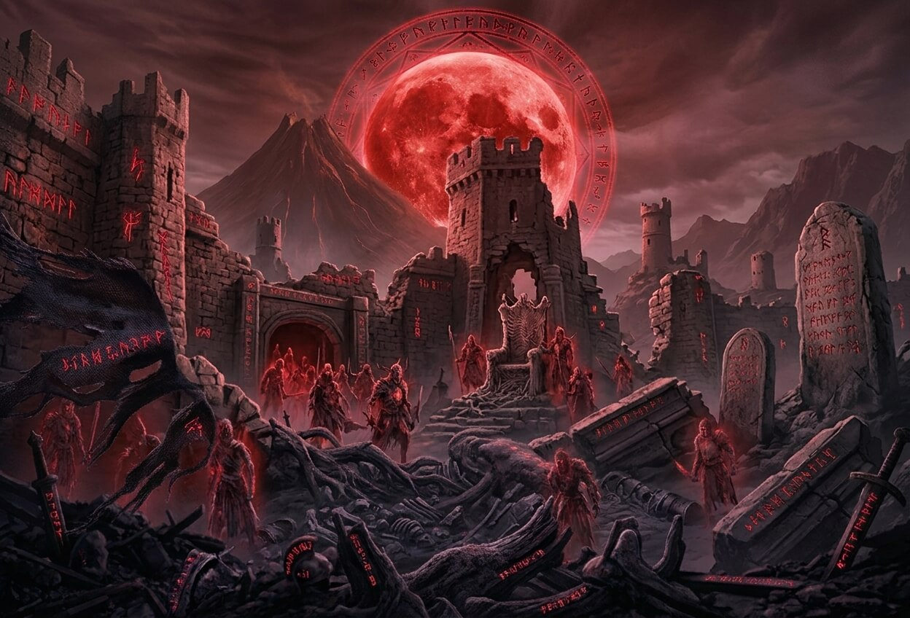
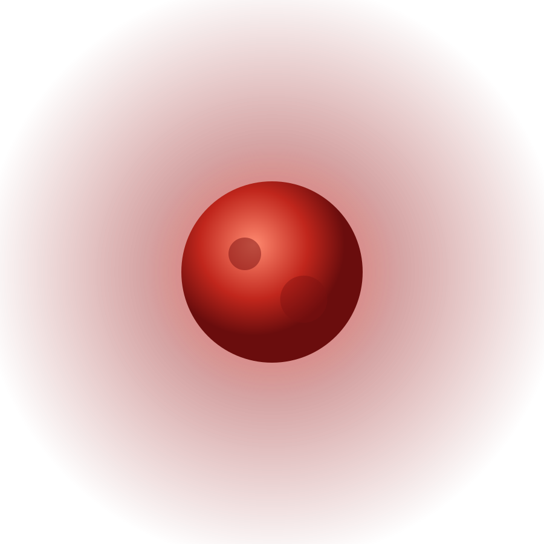
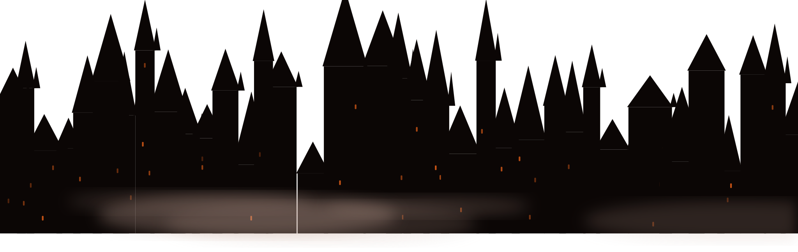
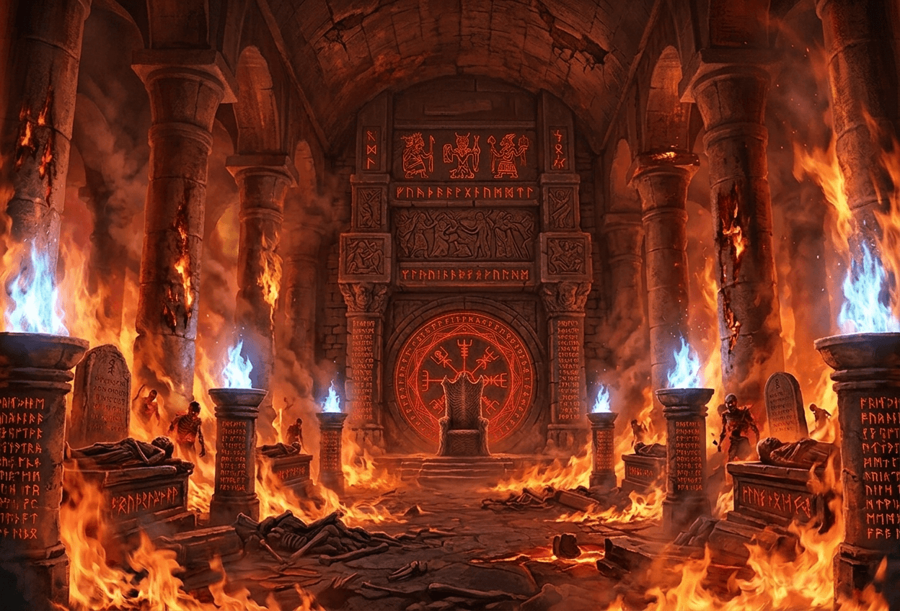
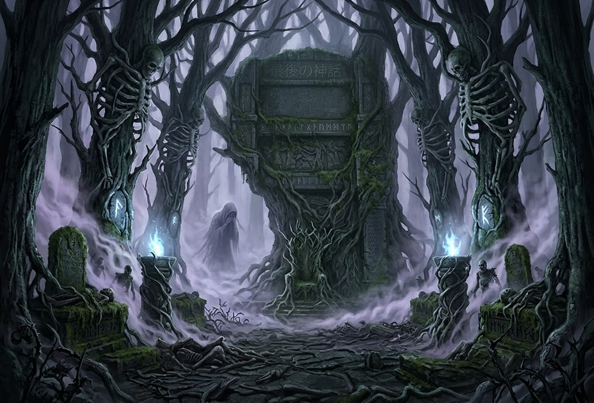
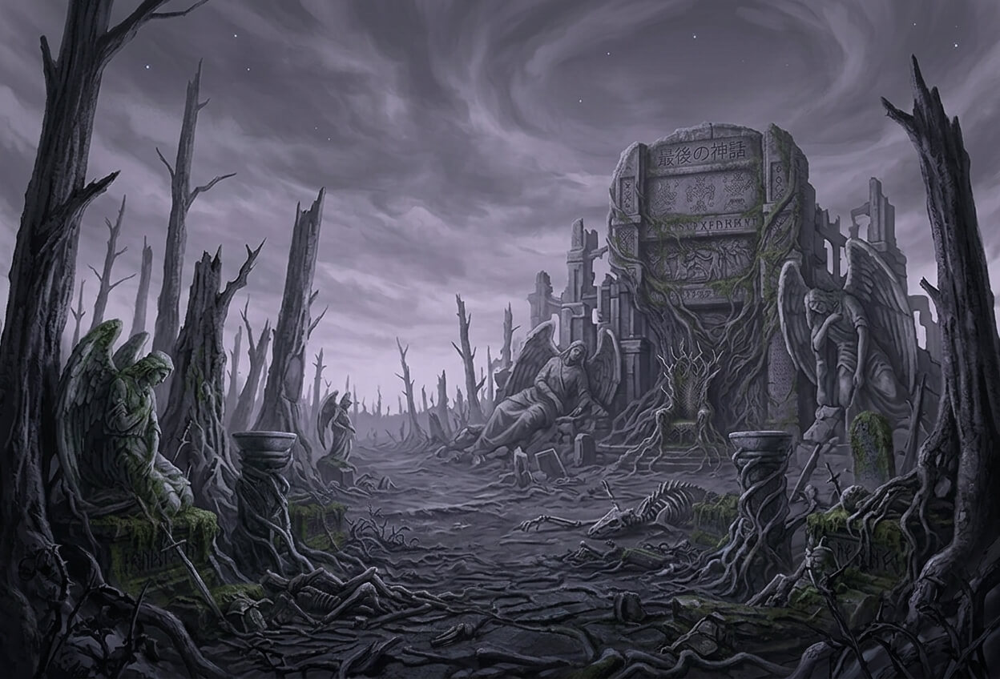
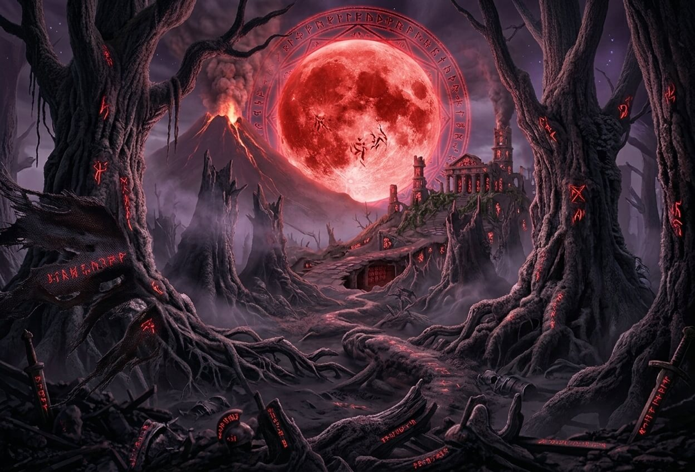

01
THE FALLEN CAPITAL
滅びた王都
かつて千の尖塔が天を衝いた王都は、いまや月明かりに照らされる巨大な墓標。崩れた城壁の隙間には、玉座を守り続ける亡者の騎士団が今も彷徨っている。


その世界に足を踏み入れた時、
あなたは、もう戻れない。
STORY
ある夜、神々は音もなく姿を消した。祈りは虚空に消え、空には血の月が昇り、大地は静かに崩れはじめる。
残された者たちが手にしたのは、砕け散った「神話」の欠片だけ。——その欠片を拾い集める者は、やがて世界の真実に辿り着く。
はじめに在ったのは、名もなき闇と、ひとつの祈りだけだった。祈りは七柱の神を生み、神々は闇を裂いて大地と海と空を創った。人々は神々を讃え、石の聖堂を築き、その名を歌い継いだ。
だが神々は知っていた。創られたものはいつか創造主を越え、あるいは創造主を喰らうことを。ゆえに彼らは世界の底に、ひとつの「楔」を打ち込んだ。それが後に「最後の神話」と呼ばれるものである。
— 第一の書 —黄昏は、一夜にして訪れた。天の玉座は空となり、神殿の灯火は同時に消えた。七柱のうち四柱は消息を絶ち、残る三柱は狂い、地上に災厄を撒き散らした。
王都は灰となり、聖職者たちは祈る言葉を失った。人々はそれでも空を見上げ続けたが、答える声は二度と降りなかった。
— 第二の書 —地図から消えた聖堂が、深層のさらに奥に眠るという。そこには神々が最後に遺した祭壇があり、砕けた神話の欠片が、血の色の光を放ちながら眠っている。
聖堂へ至る道は、死者のみが歩むことを許される。ゆえに旅人は幾度も死に、幾度も立ち上がらねばならない。
— 第三の書 —神々が去る間際、世界の七ヶ所に刻んだ呪印。それは扉を閉ざす鍵であり、同時に、何かを封じる檻でもある。ひとつ解かれるたびに、空の月は赤みを増していく。
神々は、消えたのではない。——封じられたのだ。創造主の残骸が目覚めたとき、神々は自らを犠牲に世界を閉じた。残された「神話」は祈りではなく、終焉を告げる警鐘であった。
すべての呪印を解いた先で、あなたは選ぶことになる。神話を繋ぐか、あるいは、完全に砕くか。
— 終の書 —WORLD

01
THE FALLEN CAPITAL
かつて千の尖塔が天を衝いた王都は、いまや月明かりに照らされる巨大な墓標。崩れた城壁の隙間には、玉座を守り続ける亡者の騎士団が今も彷徨っている。

02
THE FORGOTTEN SANCTUARY
炎に包まれた石柱の回廊。燃え尽きぬ聖火は神々の最後の祈りとされ、その奥には「最後の神話」に至る隠された扉が封じられている。

03
THE ABYSSAL FOREST
光の届かぬ黒い樹海。枝は人の骨のように絡み合い、霧の奥からは、祈りを忘れた魔女のすすり泣きが聞こえてくる。足を踏み入れた者は、二度と同じ道を戻れない。

04
THE ASHEN WASTELAND
神々の亡骸が燃え尽きた果ての地。風は灰を運び、大地には倒れた天使の石像だけが静かに佇む。ここが世界の終わり、そして最後の神話のはじまりの場所。
BOSS
神話の欠片を守る四つの強大な存在。その弱点、伝承、能力を知ることが、生き延びる唯一の術となる。
SECTION 05 — DEATH TRAP
深層へ堕ちる…
死は終わりではない。
倒れた者だけが、隠された聖堂への扉を見つける。
GALLERY
SPECIAL
死者だけが辿り着ける、特別な頁。

語られなかった第八の神がいた。名を持たず、顔を持たず、ただ「終わり」だけを司る神。七柱が封じたのは、創造主の残骸ではなく、この神だったのかもしれない。
あなたがここに辿り着いたということは、すでに一度、死を迎えたということ。ならば、もう一度だけ問おう——あなたは神話を、信じるか。
— 隠された頁 —開発の初期に描かれた、没になったコンセプトアートの数々。いまだ公開されていない堕天使の素描や、崩壊前の王都の設計図などを、今後このページで順次公開していく予定です。
更新情報は、公式SNSおよびNEWSでお知らせします。
— 近日公開 —『最後の神話』のサイトへお越しいただき、ありがとうございます。私たちは「絶望の中にこそ、美しさが宿る」という信念のもと、この世界を作り上げてきました。
何度倒れても、立ち上がるたびに少しだけ世界が見えてくる。そんな体験をお届けできるよう、チーム一同、最後の一滴まで魂を込めて開発を続けています。どうか、あなたの手で神話の結末を見届けてください。
— THE LAST MYTH 開発チーム —